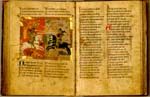

Wirnt von Gravenberg, Wigalois. Duits. Handschrift op perkament, 115 ff., 240 x 170 mm. Corvey, Noord-Duitsland, 1372. -- (LTK 537)
De Wigalois kan op grond van het
aantal bewaarde handschriften en fragmenten gerekend worden tot de succesvolle Duitse
ridderromans. Het verhaal werd omstreeks 1210 in het Duits bewerkt naar de uit Frankrijk
bekende verhalen rond het hof van koning Arthur door een verder nagenoeg onbekende
schrijver, ridder Wirnt von Gravenberg, zo genoemd naar zijn woonplaats in de buurt van
Neurenberg.
De roman vertelt de geschiedenis van Wigalois, zoon van de bekender Gawein. De held gaat,
eenmaal opgegroeid, op zoek naar zijn vader. Op die speurtocht beleeft hij, geheel in de
geest van de Arthurromans, een reeks wonderlijke avonturen.
Deze zijn in het Leidse handschrift met negenenveertig miniaturen, meestal ter grootte van een halve pagina, geïllustreerd. Voor een ridderroman is dat nogal uitzonderlijk, ook binnen de Duitse traditie, die in dit opzicht rijker is dan de Nederlandse. Het Leidse handschrift is het vroegst bewaarde geïllustreerde exemplaar van deze roman.
Ongetwijfeld was de overdadige versiering de wens van de opdrachtgever hertog Albrecht II van Braunschweig-Gutterhagen (1361-1384), die het handschrift liet uitvoeren in de cisterciënser abdij Corvey aan de Wezer. De monnik Jan van Amelungsborn werd er met het schrijfwerk belast.
De getoonde miniatuur (folio 71 v) geeft de strijd weer tussen Wigalois en Karride (zie de verzen 6646 en volgende). De voorstelling is nauwelijks door specifieke gegevens uit de tekst bepaald. Wigalois, als held in het wit, is heel schematisch en profil geplaatst tegenover zijn tegenstander, die -- evenals andere tegenstanders elders in het handschrift -- in het zwart gaat. De smalle, slanke figuren zijn typerend voor de stijl van de miniaturist, evenals de naïef weergegeven natuur met heel onrealistische planten en bomen, en de platte, bijna grove omlijsting van de afbeeldingen. De laatste staat in tegenstelling tot de gedetailleerd uitgewerkte wapenrusting van de twee vechtenden. De uitvoering van de miniaturen versterkt voor de moderne toeschouwer de sprookjesachtige atmosfeer van het verhaal. In hoeverre dat ook door de maker beoogd werd, blijft een vraag. Zijn werk staat geheel buiten de grote stroming in de miniatuurkunst, die door Parijs werd gedomineerd (zie nummer 107). Parallelle voorbeelden ontbreken. De illustraties nemen een unieke plaats in in de Noord-Duitse kunst van de late middeleeuwen. Het is echter goed mogelijk dat de illustrator zich door een voorbeeld van elders liet leiden. Op filologische gronden is wel gedacht aan een model dat in Thuringen zou zijn ontstaan.
Het handschrift laat uitstekend zien hoe buiten de toonaangevende tradities om verrassende beelden kunnen ontstaan, die een geheel eigen aspect tonen van de beleving van de werkelijkheid.
Literatuur
- A.W. Byvanck, Les principaux manuscrits à peintures conservés dans les collections publiques du Royaume des Pays-Bas, Paris 1931 ( = Bulletin de la Société francaise de reproduction des manuscrits à peintures. 15), p 96-97, pl. XXXI.
- G.I. Lieftinck, Manuscrits datés conservés dans les Pays-Bas. T. 1. Amsterdam 1964, nr. 252.
- Kunst und Kultur im Weserraum,
800-1600. Münster i.W. 1966., nr. 225.
Helma Frühmorgen-Voss, Text und Illustration im Mittelalter. Hrsg. und eingel. von Norbert H. Ott. München 1975 ( = Münchener Texte und Untersuchungen zur deutschen Literatur des Mittelalters. 50), p. XII-XIII. - I. Henderson, ‘Manuscript illustrations as generic determinants in Wirnt von Gravenberg’s Wigalois’, in: Genres in medieval German literature. Ed. by H. Heinen and I. Henderson. Göppingen 1986 ( = Göppinger Arbeiten zur Germanistik. 439).
| vorige pagina | top pagina |